Web and print packages
Websites, social media graphics and more from Elon News Network
(click images to enlarge)
The Battery Man | Photography, web, print and social media design
A long-form profile designed for the web and then translated to print about an Elon freshman who designs and builds his own electric motorcycles.
Web (click to view)
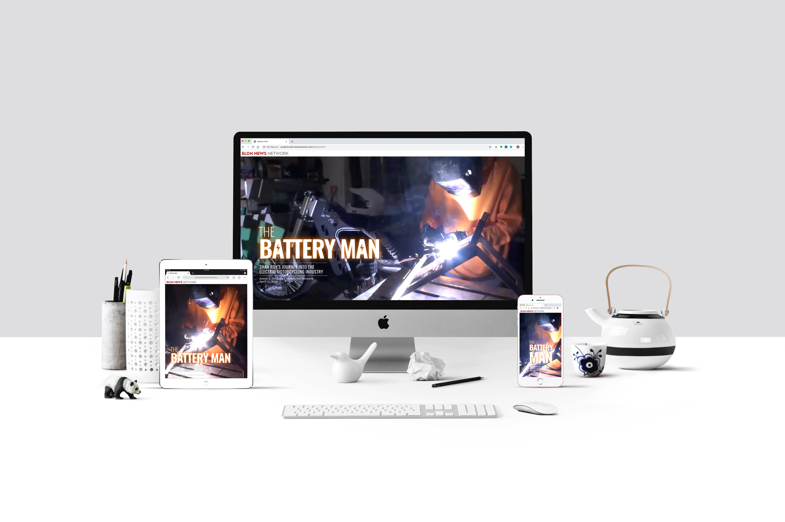

Photography
Freshman Shan Roy stands with the latest version of his electric motorcycle, “The 1.0,” in his garage in Mooresville, North Carolina, March 31.

Shan Roy explains the design of his suspension to his parents, Farid (left) and Laila (right) Roy, March 31.

Sparks fly as freshman Shan Roy welds metal for his new electric motorcycle, “The 1.0,” at his home in Mooresville, North Carolina, Feb. 25. Shan has been building electric motorcycles since high school.

Shan Roy and Dick Timmons design, examine and attach an aluminum chain guard with "Shan Roy" cut into the center.

Elon University freshman Shan Roy rides his homemade electric motorcycle down Pinnacle Lane in Mooresville, North Carolina, Feb. 25.

Shan Roy attaches the battery to the latest version of his electric motorcycle March 31.


Best of 2017 | Web, print and social media design
A semester-long project, ENN's Best of 2017 edition focused on the best Elon has to offer, as voted on by students. I helped decide the categories, make the poll, create graphics for social media promotion, manage and edit the articles, code the website and layout the print product.
Print Layout (click to see full issue)
 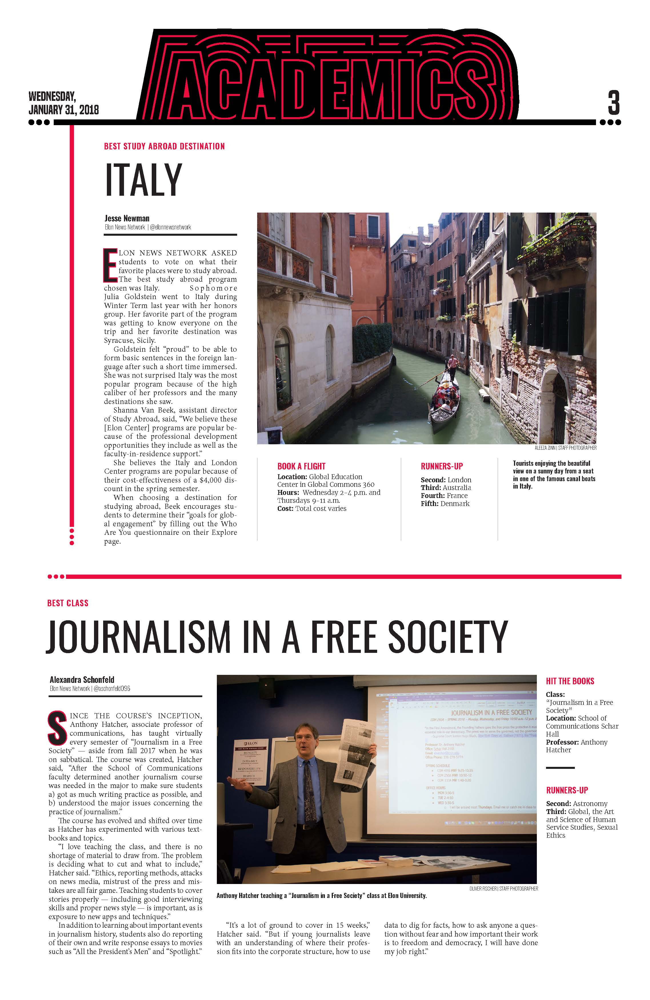
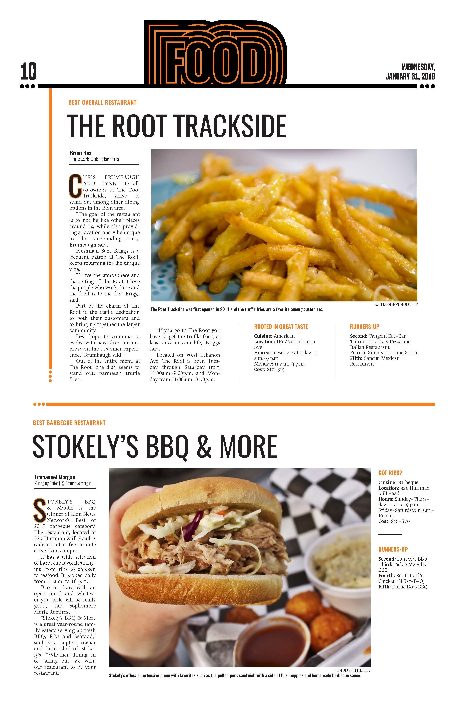
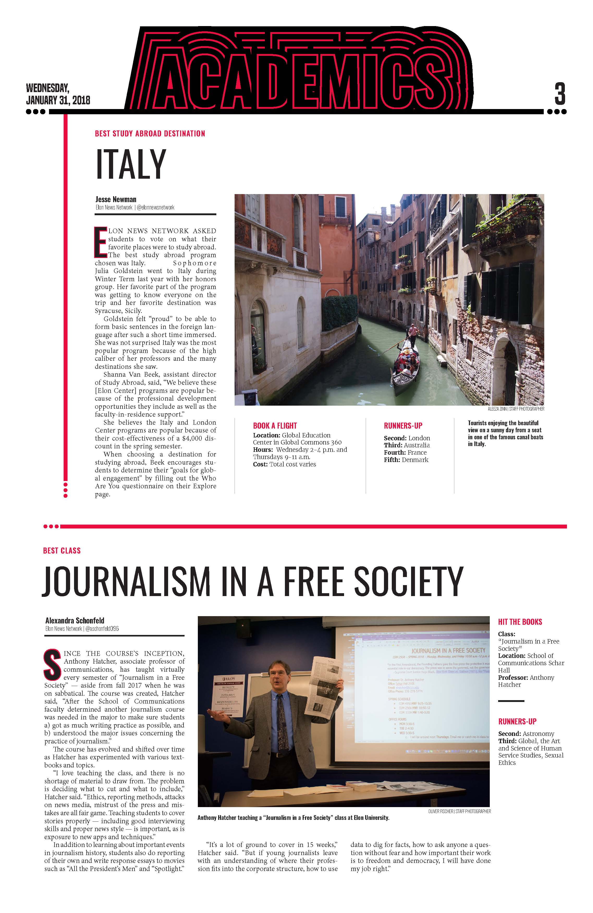
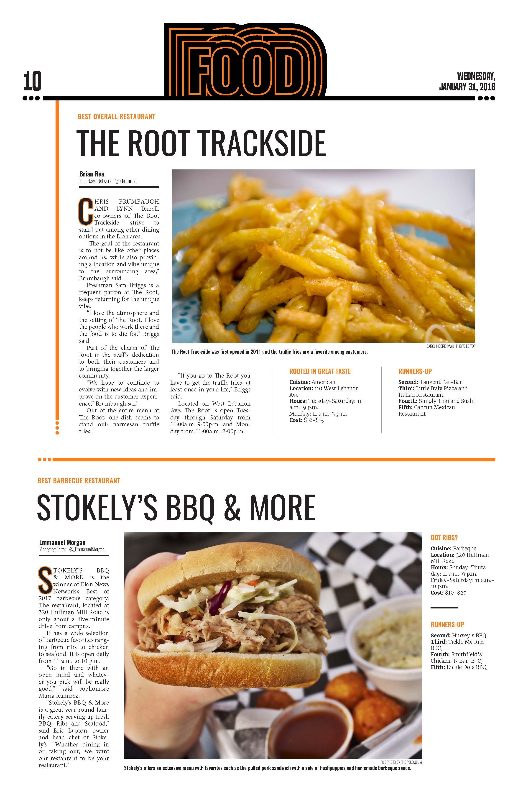
'Teachers stand in front of the bullet to save their kids and that is terrifying' | Web, print, social media design and photography
This article focused on what Elon's school of education was teaching its student teachers about gun control. I chose to focus on a powerful quote from one of the students and used parallax in the web design to make it more interactive.
Web (click to view)
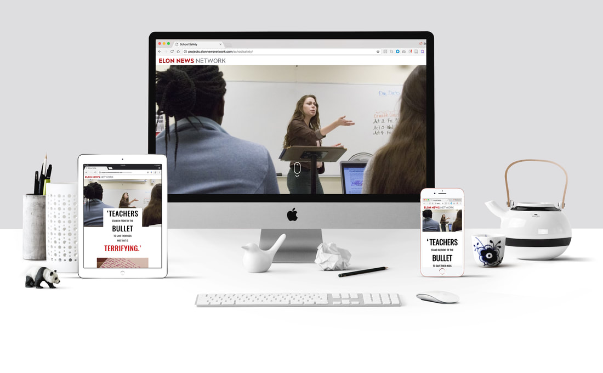Print Layout
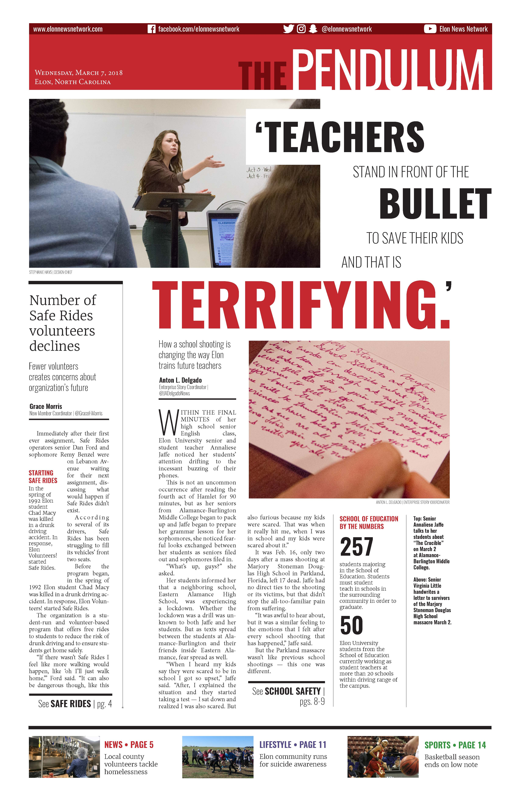 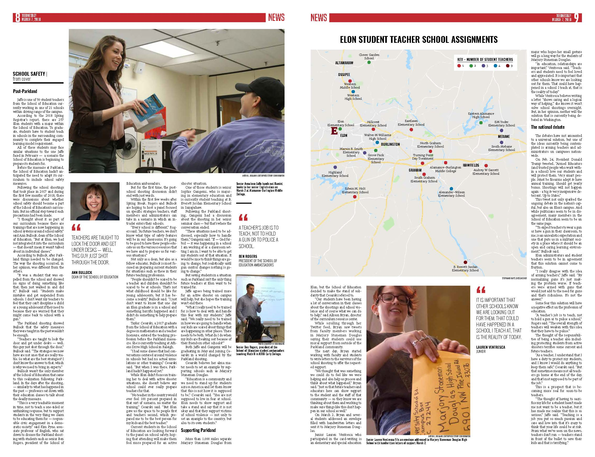Life without Leo | Web, print and social media design
For Elon's president's final week in office, the paper focused on his legacy and his future with the school. I wanted to show how both the school and Leo Lambert himself had changed over 19 years, so many photos from the University Archives were used, along with some from this past year. A photo montage was included on the hand-coded website.
Web (click to view)
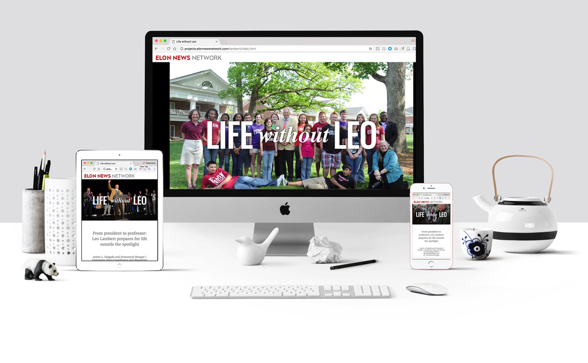Print Layout
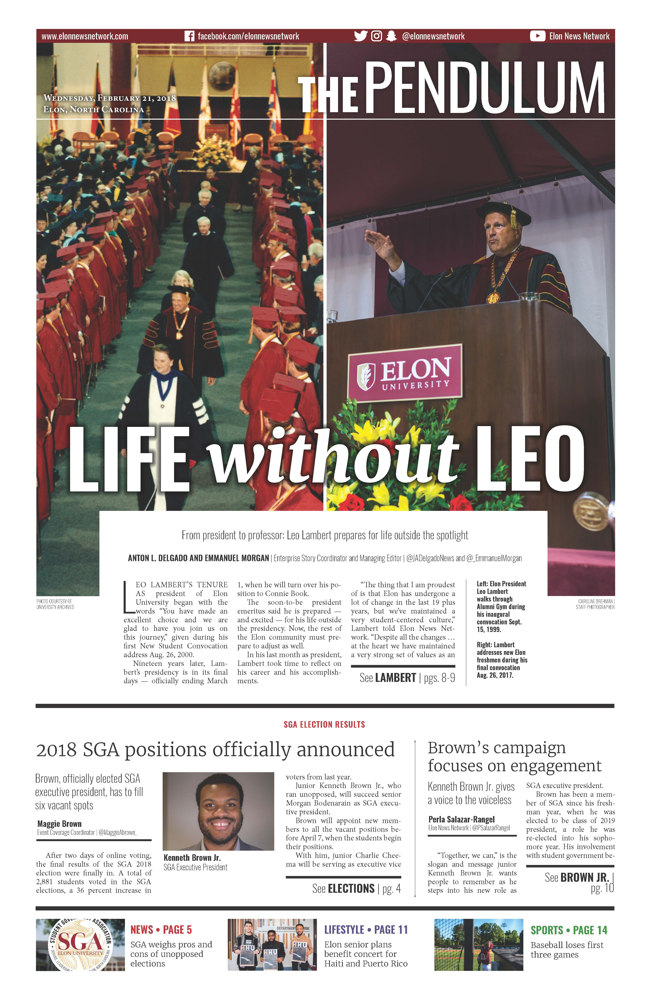 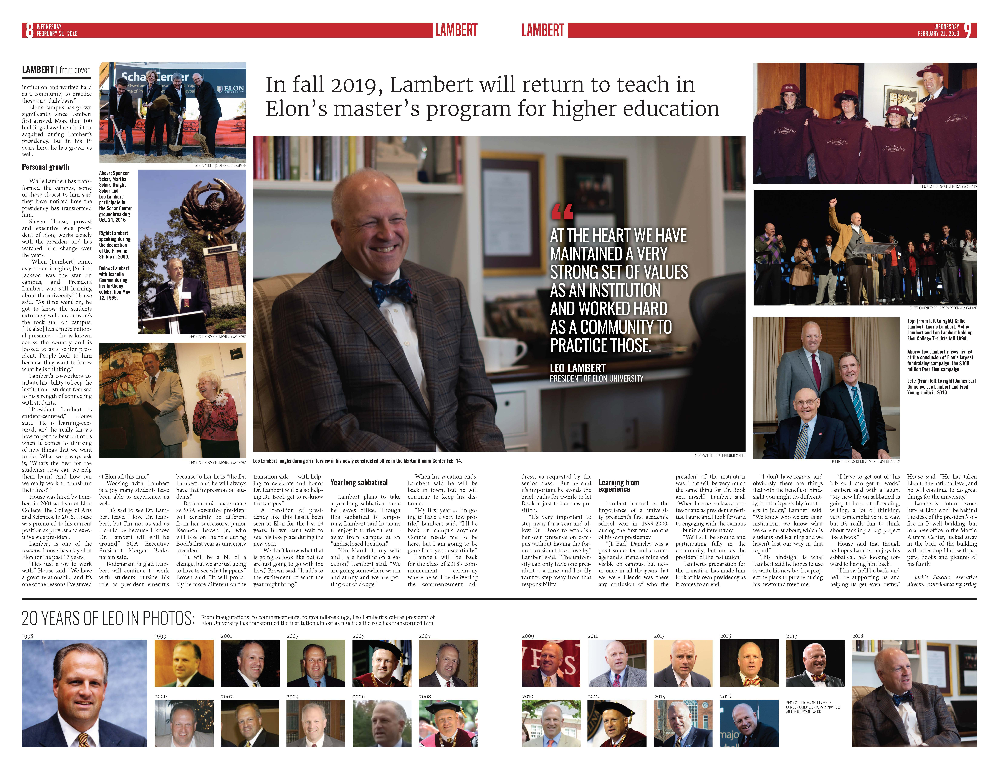Serving then, serving now | Web design, print design and illustration
The article about Veterans Day 2017 focused on six Elon faculty members who had served in the military. The cover is meant to look like the american flag and the inside looks more classically military, with green colors and dogtag and arrow design elements.
Print Layout
 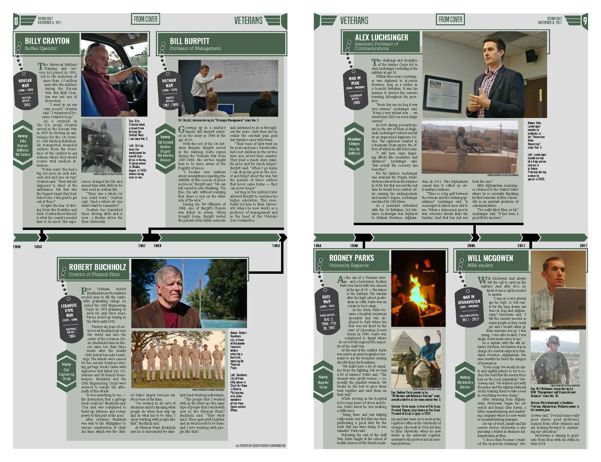
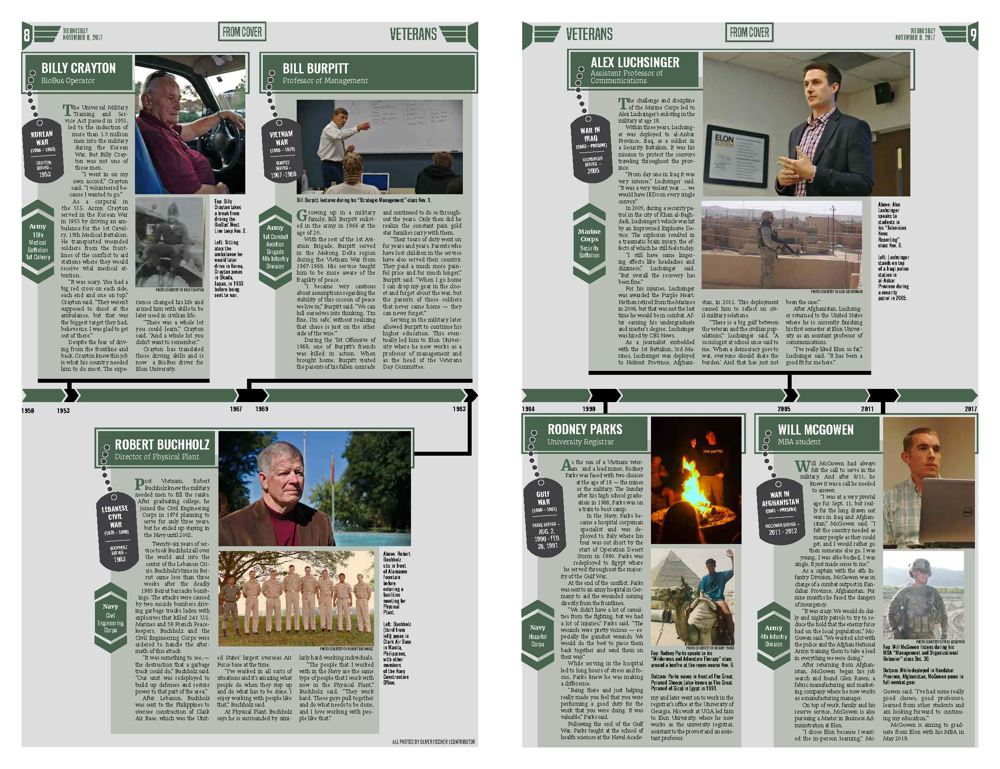